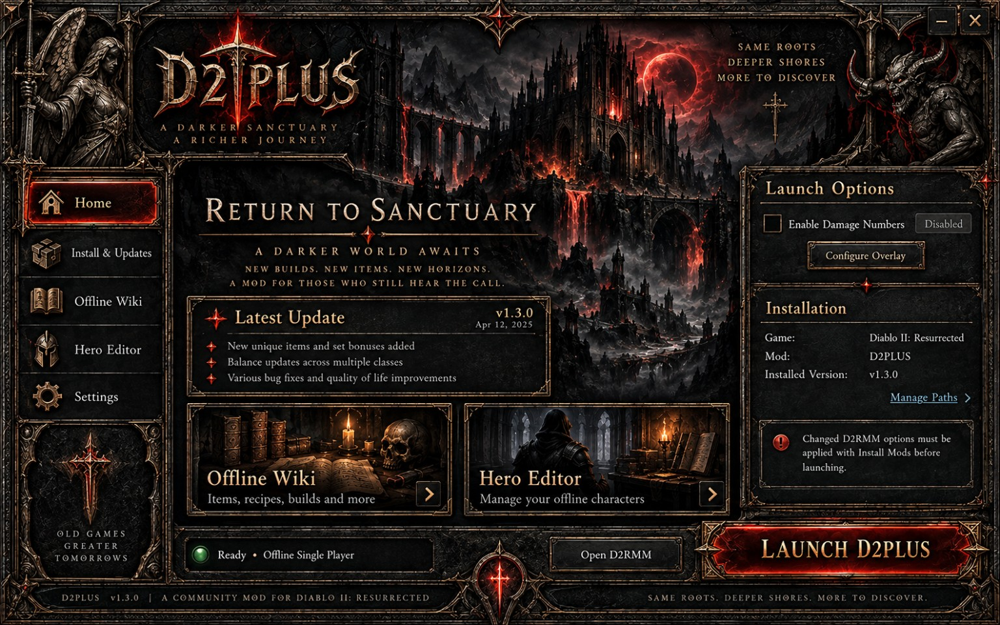

Launch D2PLUS
Choose your D2R executable and installed mod folder, or import your working shortcut. Keep your additional launch arguments.
SAME ROOTS. DEEPER SHORES.
Explore new equipment, crafting, skill changes and endgame adventures in offline Diablo II: Resurrected. The optional launcher brings your mod, wiki and hero editor together.
Windows x64 · Offline single-player · Alpha test build

ONE DESKTOP HOME
Choose your D2R executable and installed mod folder, or import your working shortcut. Keep your additional launch arguments.
Open the bundled wiki and hero editor in their own application windows. Read item details, plan builds, and export offline characters.
Enable the companion when you want it. It starts with a matching game instance and retains its original compatibility checks.
NEW IN ALPHA v0.5
Blood Raven, Cow King, the D1-inspired Summoner and two Doom Knight roles join the working build. Six Hell potions last ten minutes. Sovereign Wardens use the corresponding difficulty’s Countess drops. Worldstone Shards receive new 1×1 inventory art.
The offline wiki includes refreshed hireling stats and release details. Astral Reliquary and Sovereign Dunes remain experimental and are excluded from this working snapshot.
YOUR FIRST DESCENT
You need your own installed copy of Diablo II: Resurrected. The launcher uses the mod files already installed by D2RMM.
The v0.5 snapshot is installed output. Reinstalling older D2RMM source mods overwrites it.
Close the previous Offline Suite console. Run the installer, then open the D2PLUS Launcher desktop shortcut.
Select your game and mod paths, or import your working shortcut. Check every extra argument. Setup can download D2RMM if needed.
Test with damage numbers off first. The wiki and editor remain available if the companion is missing or fails.
Use windowed or borderless mode. Check the companion's compatibility result and complete its first-run positioning calibration.
ALPHA v0.5
Start with the working gameplay snapshot. The Windows launcher is a separate, optional download. Mod and companion versions are independent.
Installed v0.5 data plus Shard art. Merge into your game’s D2RMM.mpq output; this is not a source mod.
Release being preparedNew 1×1 Shard graphic only. Requires your working v0.5 D2RMM source setup.
Release being preparedRecommended. Creates desktop and Start-menu shortcuts.
Release being preparedExtract the whole ZIP. Keep the EXE and its accompanying files together.
Release being preparedStandalone reference with Alpha v0.5 mercenaries, potions and crafting artwork.
Release being preparedReview the backend, desktop shell, setup flow and known limitations.
Release being preparedDownloads will activate after the GitHub prerelease is published.
BEFORE YOU PLAY
Automated launcher, setup, wiki and archive checks run with each release build. Live Windows installation, display scaling and D2R compatibility still require testing.
The installer is unsigned. No game files are included. The launcher does not silently apply new D2RMM options or change your save location.
The full gameplay mod is available separately above. Follow its READ_ME.txt to apply the installed-data snapshot. The launcher installer contains the companion tools and does not install the gameplay mod automatically.
No. It measures monster health loss and can combine rapid hits, mercenary damage and summons. It is not a confirmed critical-strike detector. Optional DPS display positioning is configurable.
This integration is for offline single-player. The launcher cannot enforce which game menu you choose.
The Windows application launches the game. This website provides information and downloads; it does not run Windows executables.
Use the repository's bug-report form. Include launcher version, game executable version, steps to reproduce and sanitized logs. Export or back up characters before testing editor changes.
BUILT WITH THE COMMUNITY
Damage overlay based on Fr4nsson / D2RDamageNumbers. Hero editor derived from dschu012 / d2s-editor, with save tooling by TrayHard / d2r-saver. Desktop runtime by Electron. Full third-party notices accompany the package.